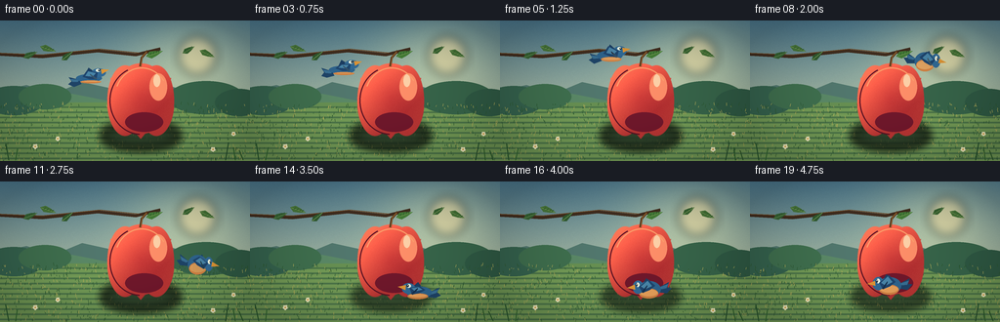
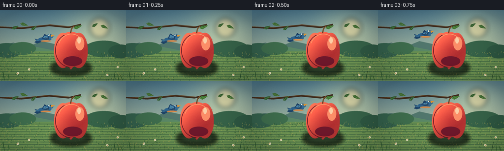
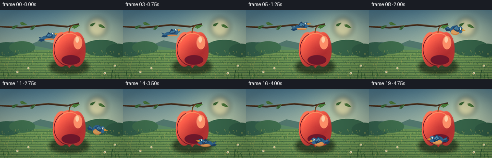
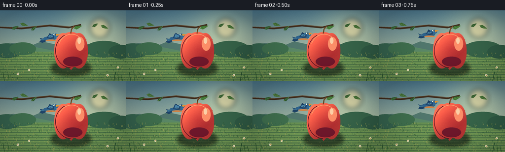

CODING AGENTS AS PIXEL WORLD MODELS
traex/DeepSeek-V4.1-Flash · dynamic_spatial_relationship_0038
点击播放 · 原生 RGB 像素
此结果可播放，但该运行尚未通过最终提交审核。页面展示不代表评测通过。
逐轮保存的候选
回放视频、检查图与代码变化。
每份候选均可单独播放。实际图片检查记录在下方工具轨迹中。
候选 01播放与检查图
点击播放 · 原生 RGB 像素


展开代码变化
--- 上一保存版本
+++ 本次保存版本
@@ -0,0 +1,387 @@
+"""Procedural PixelWorld video: a bird moves from behind to in front of an apple."""
+
+from __future__ import annotations
+
+import math
+from pathlib import Path
+
+import numpy as np
+from PIL import Image, ImageDraw, ImageFilter
+
+import artifact_io
+
+
+WIDTH, HEIGHT, FRAMES, FPS = 256, 144, 20, 4.0
+SS = 4
+W, H = WIDTH * SS, HEIGHT * SS
+CASE_DIR = Path(__file__).resolve().parent
+RNG = np.random.default_rng(380038)
+
+
+def S(value: float) -> int:
+ return int(round(value * SS))
+
+
+def mix(a, b, t):
+ return tuple(int(round(a[i] * (1.0 - t) + b[i] * t)) for i in range(3))
+
+
+def smoothstep(a: float, b: float, x: float) -> float:
+ t = np.clip((x - a) / (b - a), 0.0, 1.0)
+ return float(t * t * (3.0 - 2.0 * t))
+
+
+def gradient_background() -> Image.Image:
+ """Painted evening garden with soft bands, hills, and deterministic texture."""
+ y = np.linspace(0.0, 1.0, H, dtype=np.float32)[:, None, None]
+ x = np.linspace(0.0, 1.0, W, dtype=np.float32)[None, :, None]
+
+ top = np.array([78, 123, 145], dtype=np.float32)
+ middle = np.array([175, 191, 164], dtype=np.float32)
+ horizon = np.array([242, 203, 145], dtype=np.float32)
+ warm = np.clip(y / 0.67, 0.0, 1.0)
+ color = top * (1.0 - warm) + middle * warm
+ color = np.broadcast_to(color, (H, W, 3)).copy()
+ low = np.clip((y - 0.48) / 0.38, 0.0, 1.0)
+ color = color * (1.0 - low) + horizon * low
+
+ # A broad, low-contrast sun glow anchors the light direction.
+ sun_x, sun_y = 0.76, 0.25
+ dist = np.sqrt((x - sun_x) ** 2 + ((y - sun_y) * 0.72) ** 2)
+ glow = np.exp(-(dist / 0.25) ** 2).astype(np.float32)
+ color += glow * np.array([54, 43, 16], dtype=np.float32)
+
+ fine = RNG.normal(0.0, 2.4, (H, W, 1)).astype(np.float32)
+ color += fine
+ arr = np.clip(color, 0, 255).astype(np.uint8)
+ return Image.fromarray(arr, "RGB")
+
+
+def draw_background(image: Image.Image, t: float) -> None:
+ d = ImageDraw.Draw(image, "RGBA")
+
+ # Sun disk, kept soft behind the scenery.
+ sun = Image.new("RGBA", (S(56), S(56)), (0, 0, 0, 0))
+ sd = ImageDraw.Draw(sun)
+ sd.ellipse((S(8), S(8), S(48), S(48)), fill=(255, 230, 166, 130))
+ sun = sun.filter(ImageFilter.GaussianBlur(S(5)))
+ image.alpha_composite(sun, (S(174), S(8)))
+
+ # Layered distant hills.
+ d.polygon(
+ [(0, S(86)), (0, S(72)), (S(27), S(66)), (S(55), S(75)),
+ (S(84), S(63)), (S(116), S(70)), (S(151), S(61)),
+ (S(188), S(71)), (S(220), S(65)), (W, S(74)), (W, H), (0, H)],
+ fill=(82, 120, 110, 255),
+ )
+ d.polygon(
+ [(0, S(89)), (S(19), S(80)), (S(47), S(84)), (S(74), S(75)),
+ (S(109), S(82)), (S(139), S(74)), (S(171), S(83)),
+ (S(204), S(76)), (S(232), S(82)), (W, S(76)), (W, H), (0, H)],
+ fill=(91, 137, 103, 255),
+ )
+
+ # Meadow with mown color variation.
+ d.rectangle((0, S(84), W, H), fill=(104, 145, 83, 255))
+ for i in range(34):
+ yy = S(88 + i * 1.75)
+ shade = (116, 156, 87, 26) if i % 3 else (78, 119, 74, 22)
+ d.rectangle((0, yy, W, yy + S(2.2)), fill=shade)
+
+ # Distant hedge and tree crowns give the garden depth.
+ for cx, cy, rx, ry, col in [
+ (14, 82, 31, 15, (54, 100, 79, 255)),
+ (46, 78, 27, 13, (64, 112, 79, 255)),
+ (211, 79, 39, 17, (56, 102, 75, 255)),
+ (245, 84, 25, 14, (48, 91, 69, 255)),
+ ]:
+ d.ellipse((S(cx - rx), S(cy - ry), S(cx + rx), S(cy + ry)), fill=col)
+
+ # Fine grass texture.
+ for _ in range(700):
+ gx = RNG.uniform(0, WIDTH)
+ gy = RNG.uniform(86, 144)
+ length = RNG.uniform(1.0, 3.2)
+ alpha = int(RNG.uniform(22, 64))
+ col = (44, 88, 49, alpha) if RNG.random() < 0.58 else (184, 177, 91, alpha)
+ d.line((S(gx), S(gy), S(gx + RNG.uniform(-0.8, 0.8)), S(gy - length)), fill=col, width=max(1, SS // 2))
+
+ # A branch enters from the left and supports the apple.
+ d.line(
+ [(S(-8), S(34)), (S(43), S(37)), (S(100), S(31)), (S(139), S(35)), (S(164), S(29))],
+ fill=(65, 45, 30, 255), width=S(3.3), joint="curve",
+ )
+ d.line(
+ [(S(-5), S(33)), (S(43), S(35)), (S(102), S(29)), (S(142), S(33))],
+ fill=(111, 76, 42, 220), width=S(1.0), joint="curve",
+ )
+
+ # Sparse foreground leaves, swaying only slightly.
+ sway = math.sin(t * math.tau) * 0.55
+ leaves = [
+ (31, 35, -22 + sway, 7.8, 3.1, (55, 101, 53)),
+ (49, 29, 18 - sway, 8.4, 3.3, (73, 120, 59)),
+ (69, 36, -38 + sway, 7.4, 3.0, (48, 91, 48)),
+ (193, 30, -31 + sway, 7.0, 2.9, (56, 100, 50)),
+ (212, 34, 25 - sway, 8.4, 3.2, (70, 115, 54)),
+ ]
+ for cx, cy, angle, length, width, col in leaves:
+ draw_leaf(d, cx, cy, angle, length, width, col, detail=True)
+
+ # Small daisies keep the lower field lively without competing with the subject.
+ for x, y, r in [(36, 129, 1.7), (59, 121, 1.4), (218, 132, 1.6), (239, 116, 1.3)]:
+ for k in range(5):
+ a = k * math.tau / 5 + 0.3
+ px, py = x + math.cos(a) * r, y + math.sin(a) * r
+ d.ellipse((S(px - 1.0), S(py - 1.0), S(px + 1.0), S(py + 1.0)), fill=(248, 241, 201, 230))
+ d.ellipse((S(x - 0.8), S(y - 0.8), S(x + 0.8), S(y + 0.8)), fill=(222, 168, 65, 255))
+
+
+def draw_leaf(d: ImageDraw.ImageDraw, cx, cy, angle, length, width, color, detail=False):
+ a = math.radians(angle)
+ ca, sa = math.cos(a), math.sin(a)
+
+ def pt(x, y):
+ return (S(cx + x * ca - y * sa), S(cy + x * sa + y * ca))
+
+ points = [
+ pt(-length, 0), pt(-length * 0.45, -width), pt(length * 0.20, -width * 0.72),
+ pt(length, 0), pt(length * 0.18, width * 0.70), pt(-length * 0.45, width),
+ ]
+ d.polygon(points, fill=(*color, 255))
+ if detail:
+ d.line([pt(-length * 0.86, 0), pt(length * 0.86, 0)], fill=(155, 184, 105, 185), width=max(1, SS // 2))
+ for frac in (-0.46, -0.12, 0.24, 0.52):
+ d.line([pt(length * frac, 0), pt(length * (frac + 0.15), -width * 0.54)], fill=(37, 80, 43, 125), width=max(1, SS // 2))
+
+
+def apple_mask_and_shadow(image: Image.Image) -> tuple[Image.Image, int, int, int, int]:
+ """Composite a shaded apple and return its collision-friendly bounds."""
+ cx, cy = 144.0, 79.0
+ rx, ry = 34.5, 38.5
+
+ # Contact shadow on the ground.
+ shadow = Image.new("RGBA", (W, H), (0, 0, 0, 0))
+ sd = ImageDraw.Draw(shadow)
+ sd.ellipse((S(107), S(108), S(181), S(128)), fill=(42, 62, 41, 78))
+ shadow = shadow.filter(ImageFilter.GaussianBlur(S(5)))
+ image.alpha_composite(shadow)
+
+ # The body is two overlapping lobes, which gives the apple its familiar heart shape.
+ mask = Image.new("L", (W, H), 0)
+ md = ImageDraw.Draw(mask)
+ md.ellipse((S(cx - 34), S(cy - 33), S(cx + 2), S(cy + 39)), fill=255)
+ md.ellipse((S(cx - 2), S(cy - 33), S(cx + 34), S(cy + 39)), fill=255)
+ md.ellipse((S(cx - 30), S(cy - 35), S(cx + 30), S(cy + 37)), fill=255)
+ md.polygon(
+ [(S(cx - 31), S(cy - 20)), (S(cx - 21), S(cy + 17)),
+ (S(cx), S(cy + 42)), (S(cx + 21), S(cy + 17)),
+ (S(cx + 31), S(cy - 20))],
+ fill=255,
+ )
+ mask = mask.filter(ImageFilter.GaussianBlur(S(0.24)))
+
+ yy, xx = np.mgrid[0:H, 0:W].astype(np.float32)
+ nx = (xx - S(cx)) / S(rx)
+ ny = (yy - S(cy)) / S(ry)
+ # Light from the upper right; deep red core and warm reflected rim.
+ light = np.clip(0.50 - 0.55 * nx + 0.72 * (-ny), 0.0, 1.35)
+ edge = np.clip(np.sqrt(nx * nx + ny * ny), 0.0, 1.0)
+ base = np.empty((H, W, 3), dtype=np.float32)
+ base[:, :, 0] = 169 + 74 * light + 17 * edge
+ base[:, :, 1] = 37 + 48 * light + 17 * edge
+ base[:, :, 2] = 45 + 26 * light + 7 * edge
+ # Fine apple skin flecks and a soft blush.
+ fleck = RNG.normal(0, 2.8, (H, W, 1)).astype(np.float32)
+ base += fleck
+ rgba = np.dstack([np.clip(base, 0, 255), np.asarray(mask)]).astype(np.uint8)
+ apple = Image.fromarray(rgba, "RGBA")
+ image.alpha_composite(apple)
+
+ # Painted highlights and dimple shading.
+ d = ImageDraw.Draw(image, "RGBA")
+ d.ellipse((S(153), S(54), S(171), S(82)), fill=(255, 143, 105, 35))
+ d.ellipse((S(157), S(55), S(164), S(68)), fill=(255, 210, 169, 82))
+ d.ellipse((S(128), S(94), S(167), S(114)), fill=(113, 24, 44, 35))
+ d.arc((S(117), S(48), S(173), S(111)), 203, 325, fill=(255, 159, 108, 105), width=S(1.2))
+ d.arc((S(112), S(47), S(176), S(117)), 92, 245, fill=(94, 20, 37, 115), width=S(1.3))
+
+ # Stem and a single bright leaf.
+ d.line(
+ [(S(143.5), S(47)), (S(145), S(38)), (S(151), S(31))],
+ fill=(84, 52, 25, 255), width=S(2.3), joint="curve",
+ )
+ d.line(
+ [(S(144), S(47)), (S(145.5), S(37)), (S(150), S(32))],
+ fill=(155, 106, 52, 180), width=S(0.7), joint="curve",
+ )
+ draw_leaf(d, 158, 34, -18, 9.0, 3.6, (69, 126, 55), detail=True)
+
+ return image, cx, cy, rx, ry
+
+
+def transform_point(px, py, cx, cy, angle, scale, mirror=1.0):
+ ca, sa = math.cos(angle), math.sin(angle)
+ x = px * scale * mirror
+ y = py * scale
+ return S(cx + x * ca - y * sa), S(cy + x * sa + y * ca)
+
+
+def draw_bird(image: Image.Image, cx, cy, angle, scale, flap, mirror=1.0):
+ """Draw a layered songbird sprite in logical pixel units."""
+ d = ImageDraw.Draw(image, "RGBA")
+
+ def P(points, **kwargs):
+ d.polygon([transform_point(x, y, cx, cy, angle, scale, mirror) for x, y in points], **kwargs)
+
+ def E(box, **kwargs):
+ x0, y0, x1, y1 = box
+ p0 = transform_point(x0, y0, cx, cy, angle, scale, mirror)
+ p1 = transform_point(x1, y1, cx, cy, angle, scale, mirror)
+ d.ellipse((min(p0[0], p1[0]), min(p0[1], p1[1]), max(p0[0], p1[0]), max(p0[1], p1[1])), **kwargs)
+
+ # Tail feathers.
+ tail_lift = 2.0 * flap
+ P([(-10, -1), (-20, -7 + tail_lift), (-18, -2 + tail_lift), (-22, 1),
+ (-17, 4 + tail_lift), (-9, 4)], fill=(31, 69, 105, 255))
+ P([(-10, -1), (-19, -5 + tail_lift), (-17, -1 + tail_lift), (-12, 1)], fill=(57, 112, 148, 255))
+
+ # Far wing and body.
+ P([(-4, -3), (2, -10 - flap * 1.4), (8, -4), (5, 4)], fill=(28, 63, 99, 255))
+ E((-12, -7, 12, 7), fill=(47, 101, 143, 255))
+ E((-9, 0, 11, 8), fill=(212, 132, 68, 255))
+ E((-8, 1, 10, 6), fill=(235, 163, 92, 230))
+
+ # Head and beak.
+ E((5, -9, 17, 3), fill=(50, 107, 151, 255))
+ P([(14, -6), (22, -3.5), (14, -1)], fill=(225, 151, 54, 255))
+ E((9, -7.5, 13, -3.5), fill=(240, 247, 226, 255))
+ E((11.2, -6.8, 13.1, -4.2), fill=(18, 33, 42, 255))
+ E((11.7, -6.3, 12.4, -5.4), fill=(255, 255, 248, 255))
+
+ # Near wing, lifted and tilted with the flight phase.
+ wing_y = -6.0 - 4.4 * flap
+ P([(-6, -3), (0, wing_y), (10, -3.5), (7, 3), (0, 1)], fill=(31, 70, 111, 255))
+ P([(-3, -3), (1, wing_y + 1.2), (8, -3.5), (4, -0.5)], fill=(74, 135, 170, 255))
+ # A few feather separations remain readable at video resolution.
+ for off in (0.0, 2.2, 4.4):
+ d.line(
+ [transform_point(2, -4 + off * 0.2, cx, cy, angle, scale, mirror),
+ transform_point(8 - off * 0.35, 2.5 + off * 0.12, cx, cy, angle, scale, mirror)],
+ fill=(21, 48, 78, 170), width=max(1, SS // 2),
+ )
+
+
+def catmull_rom(points, u):
+ """Centripetal-ish path interpolation through hand-placed motion anchors."""
+ points = np.asarray(points, dtype=np.float64)
+ u = float(np.clip(u, 0.0, 1.0))
+ scaled = u * (len(points) - 1)
+ i = min(int(scaled), len(points) - 2)
+ t = scaled - i
+ p0 = points[max(0, i - 1)]
+ p1 = points[i]
+ p2 = points[i + 1]
+ p3 = points[min(len(points) - 1, i + 2)]
+ t2, t3 = t * t, t * t * t
+ return 0.5 * (
+ 2 * p1
+ + (-p0 + p2) * t
+ + (2 * p0 - 5 * p1 + 4 * p2 - p3) * t2
+ + (-p0 + 3 * p1 - 3 * p2 + p3) * t3
+ )
+
+
+PATH = np.array([
+ (91, 59),
+ (101, 42),
+ (137, 31),
+ (177, 40),
+ (199, 62),
+ (202, 87),
+ (188, 106),
+ (164, 114),
+ (143, 106),
+], dtype=np.float64)
+
+
+def bird_state(t: float):
+ # Ease the start and settle at the foreground position.
+ u = smoothstep(0.0, 1.0, t)
+ center = catmull_rom(PATH, u)
+ du = min(1.0, max(0.0, u + 0.012))
+ ahead = catmull_rom(PATH, du)
+ behind = catmull_rom(PATH, max(0.0, u - 0.012))
+ delta = ahead - behind
+ angle = math.atan2(delta[1], delta[0]) * 0.42
+ # Facing right during departure, left as it returns in front of the apple.
+ facing = np.interp(t, [0.0, 0.28, 0.47, 0.73, 1.0], [1.0, 1.0, 0.80, -0.72, -1.0])
+ mirror = -1.0 if facing < 0 else 1.0
+ # Slight banking is expressed by the sprite's rotation.
+ angle = np.clip(angle, -0.24, 0.24)
+ if facing < 0:
+ angle *= 0.40
+ bob = math.sin(t * math.tau * 3.1) * 0.85
+ flap = 0.5 + 0.5 * math.sin(t * math.tau * 5.2)
+ return center[0], center[1] + bob, angle, flap, mirror
+
+
+def foreground(image: Image.Image, t: float):
+ d = ImageDraw.Draw(image, "RGBA")
+ sway = math.sin(t * math.tau) * 0.65
+ # Long blades frame the lower edge and reinforce the foreground plane.
+ for x, y, h, lean, col in [
+ (9, 143, 17, -3, (35, 83, 43, 235)),
+ (16, 143, 12, 2, (49, 104, 48, 220)),
+ (231, 143, 18, 3, (32, 76, 42, 235)),
+ (241, 143, 13, -2, (48, 99, 45, 220)),
+ (249, 143, 10, -4, (42, 88, 40, 220)),
+ ]:
+ d.line(
+ [(S(x), S(y)), (S(x + lean + sway), S(y - h))],
+ fill=col, width=max(1, SS),
+ )
+
+
+def render() -> np.ndarray:
+ background = gradient_background()
+ frames = []
+ for i in range(FRAMES):
+ t = i / (FRAMES - 1)
+ canvas = background.copy().convert("RGBA")
+ draw_background(canvas, t)
+ canvas, _, _, _, _ = apple_mask_and_shadow(canvas)
+
+ bx, by, angle, flap, mirror = bird_state(t)
+ bird_scale = 1.0 + 0.045 * smoothstep(0.55, 1.0, t)
+ # The spatial handoff occurs while the bird is beyond the apple's right edge.
+ if t >= 0.72:
+ draw_bird(canvas, bx, by, angle, bird_scale, flap, mirror)
+ else:
+ behind = Image.new("RGBA", (W, H), (0, 0, 0, 0))
+ draw_bird(behind, bx, by, angle, bird_scale, flap, mirror)
+ canvas.alpha_composite(behind)
+ # Repaint the apple above the bird to make the rear depth order explicit.
+ apple_layer, _, _, _, _ = apple_mask_and_shadow(Image.new("RGBA", (W, H), (0, 0, 0, 0)))
+ canvas.alpha_composite(apple_layer)
+
+ foreground(canvas, t)
+
+ # Gentle vignette and warm light bloom unify the scene.
+ arr = np.asarray(canvas.convert("RGB"), dtype=np.float32) / 255.0
+ yy, xx = np.mgrid[0:H, 0:W].astype(np.float32)
+ nx = (xx / (W - 1) - 0.5) * 2.0
+ ny = (yy / (H - 1) - 0.5) * 2.0
+ vignette = np.clip(1.0 - 0.15 * (nx * nx + ny * ny), 0.78, 1.0)[..., None]
+ arr *= vignette
+ arr = np.clip(arr * 255.0, 0, 255).astype(np.uint8)
+ frame = Image.fromarray(arr, "RGB").resize((WIDTH, HEIGHT), Image.Resampling.LANCZOS)
+ frames.append(np.asarray(frame, dtype=np.uint8))
+
+ return np.stack(frames)
+
+
+if __name__ == "__main__":
+ video = render()
+ artifact_io.save(video, CASE_DIR)
+ print(f"saved {video.shape} frames to {CASE_DIR}")
候选 02播放与检查图
点击播放 · 原生 RGB 像素
展开代码变化
--- 上一保存版本
+++ 本次保存版本
@@ -293,8 +293,8 @@
PATH = np.array([
- (91, 59),
- (101, 42),
+ (101, 57),
+ (105, 41),
(137, 31),
(177, 40),
(199, 62),
@@ -350,20 +350,18 @@
t = i / (FRAMES - 1)
canvas = background.copy().convert("RGBA")
draw_background(canvas, t)
- canvas, _, _, _, _ = apple_mask_and_shadow(canvas)
bx, by, angle, flap, mirror = bird_state(t)
bird_scale = 1.0 + 0.045 * smoothstep(0.55, 1.0, t)
# The spatial handoff occurs while the bird is beyond the apple's right edge.
- if t >= 0.72:
- draw_bird(canvas, bx, by, angle, bird_scale, flap, mirror)
+ bird_layer = Image.new("RGBA", (W, H), (0, 0, 0, 0))
+ draw_bird(bird_layer, bx, by, angle, bird_scale, flap, mirror)
+ if t < 0.72:
+ canvas.alpha_composite(bird_layer)
+ canvas, _, _, _, _ = apple_mask_and_shadow(canvas)
else:
- behind = Image.new("RGBA", (W, H), (0, 0, 0, 0))
- draw_bird(behind, bx, by, angle, bird_scale, flap, mirror)
- canvas.alpha_composite(behind)
- # Repaint the apple above the bird to make the rear depth order explicit.
- apple_layer, _, _, _, _ = apple_mask_and_shadow(Image.new("RGBA", (W, H), (0, 0, 0, 0)))
- canvas.alpha_composite(apple_layer)
+ canvas, _, _, _, _ = apple_mask_and_shadow(canvas)
+ canvas.alpha_composite(bird_layer)
foreground(canvas, t)
候选 03播放与检查图
候选 04播放与检查图
点击播放 · 原生 RGB 像素


展开代码变化
--- 上一保存版本
+++ 本次保存版本
@@ -54,11 +54,12 @@
fine = RNG.normal(0.0, 2.4, (H, W, 1)).astype(np.float32)
color += fine
arr = np.clip(color, 0, 255).astype(np.uint8)
- return Image.fromarray(arr, "RGB")
+ return Image.fromarray(arr)
def draw_background(image: Image.Image, t: float) -> None:
d = ImageDraw.Draw(image, "RGBA")
+ grass_rng = np.random.default_rng(20261110)
# Sun disk, kept soft behind the scenery.
sun = Image.new("RGBA", (S(56), S(56)), (0, 0, 0, 0))
@@ -99,12 +100,12 @@
# Fine grass texture.
for _ in range(700):
- gx = RNG.uniform(0, WIDTH)
- gy = RNG.uniform(86, 144)
- length = RNG.uniform(1.0, 3.2)
- alpha = int(RNG.uniform(22, 64))
- col = (44, 88, 49, alpha) if RNG.random() < 0.58 else (184, 177, 91, alpha)
- d.line((S(gx), S(gy), S(gx + RNG.uniform(-0.8, 0.8)), S(gy - length)), fill=col, width=max(1, SS // 2))
+ gx = grass_rng.uniform(0, WIDTH)
+ gy = grass_rng.uniform(86, 144)
+ length = grass_rng.uniform(1.0, 3.2)
+ alpha = int(grass_rng.uniform(22, 64))
+ col = (44, 88, 49, alpha) if grass_rng.random() < 0.58 else (184, 177, 91, alpha)
+ d.line((S(gx), S(gy), S(gx + grass_rng.uniform(-0.8, 0.8)), S(gy - length)), fill=col, width=max(1, SS // 2))
# A branch enters from the left and supports the apple.
d.line(
@@ -192,10 +193,10 @@
base[:, :, 1] = 37 + 48 * light + 17 * edge
base[:, :, 2] = 45 + 26 * light + 7 * edge
# Fine apple skin flecks and a soft blush.
- fleck = RNG.normal(0, 2.8, (H, W, 1)).astype(np.float32)
+ fleck = np.random.default_rng(99144).normal(0, 2.8, (H, W, 1)).astype(np.float32)
base += fleck
rgba = np.dstack([np.clip(base, 0, 255), np.asarray(mask)]).astype(np.uint8)
- apple = Image.fromarray(rgba, "RGBA")
+ apple = Image.fromarray(rgba)
image.alpha_composite(apple)
# Painted highlights and dimple shading.
@@ -373,7 +374,7 @@
vignette = np.clip(1.0 - 0.15 * (nx * nx + ny * ny), 0.78, 1.0)[..., None]
arr *= vignette
arr = np.clip(arr * 255.0, 0, 255).astype(np.uint8)
- frame = Image.fromarray(arr, "RGB").resize((WIDTH, HEIGHT), Image.Resampling.LANCZOS)
+ frame = Image.fromarray(arr).resize((WIDTH, HEIGHT), Image.Resampling.LANCZOS)
frames.append(np.asarray(frame, dtype=np.uint8))
return np.stack(frames)
可观测工具轨迹
实际执行的命令与返回图片。
命令 1exit 0
/bin/bash -c "pwd && rg --files -g 'prompt.txt' -g 'GENERATION_RULES.md' -g 'task_spec.json' -g '"'!**/.git/**'"'"
命令 2exit 0
/bin/bash -c 'ls -la'
命令 3exit 0
/bin/bash -c 'cat prompt.txt'
命令 4exit 0
/bin/bash -c 'cat GENERATION_RULES.md'
命令 5exit 0
/bin/bash -c 'cat task_spec.json'
命令 6exit 0
/bin/bash -c "sed -n '1,240p' artifact_io.py"
命令 7exit 0
/bin/bash -c "python - <<'PY'
import PIL, numpy
print('PIL', PIL.__version__)
print('numpy', numpy.__version__)
PY"命令 8exit 0
/bin/bash -c 'command -v ffmpeg || true; command -v convert || true'
命令 9exit 1
/bin/bash -c 'python generate.py'
命令 10exit 0
/bin/bash -c 'python generate.py'
命令 11exit 0
/bin/bash -c 'command -v chafa || true; command -v viu || true; command -v jp2 || true; command -v img2txt || true'
命令 12exit 0
/bin/bash -c "python - <<'PY'
import generate
for i in range(20):
t=i/19
u=generate.smoothstep(0,1,t)
x,y,*_=generate.bird_state(t)
print(f'{i:02d} {t:.3f} ({x:.1f},{y:.1f})')
PY"命令 13exit 0
/bin/bash -c "python - <<'PY' from PIL import Image import numpy as np for p in ['inspection.png','transition_check.png','frames/00.png','frames/09.png','frames/14.png','frames/19.png']: im=Image.open(p) a=np.array(im) print(p, im.size, 'mean', a.mean(axis=(0,1)).round(1), 'std', a.std().round(1), 'range', a.min(), a.max()) PY"
命令 14exit 0
/bin/bash -c "python - <<'PY'
from PIL import Image
im=Image.open('inspection.png')
# Nearest-neighbor scaled contact sheet with no labels; useful as a visual sanity check.
im.resize((1536,495)).save('.tmp/inspection_large.png')
PY"命令 15exit 0
/bin/bash -c 'python generate.py'
命令 16exit 1
/bin/bash -c "python - <<'PY'
import json, pathlib, numpy as np
from PIL import Image
case=pathlib.Path('.')
spec=json.loads((case/'task_spec.json').read_text())
z=np.load(case/'pixels.npz')['pixels']
frames=np.stack([np.asarray(Image.open(p).convert('RGB')) for p in sorted((case/'frames').glob('*.png'))])
print('pixels', z.shape, z.dtype, 'frames', frames.shape, frames.dtype)
print('index', (case/'index.html').stat().st_size, 'npz', (case/'pixels.npz').stat().st_size)
print('per-frame mean/std:', [(round(float(f.mean()),1), round(float(f.std()),1)) for f in frames[::4]])
# Compare RGB PNGs with packed pixel tensor exactly.
unpack=np.stack([(z>>16)&255,(z>>8)&255,z&255],axis=-1).transpose(2,0,1)
print('tensor matches PNG:', np.array_equal(unpack.transpose(0,2,1), frames))
PY"命令 17exit 0
/bin/bash -c 'python generate.py'
命令 18exit 1
/bin/bash -c "python - <<'PY'
import json, pathlib, numpy as np
from PIL import Image
case=pathlib.Path('.')
z=np.load(case/'pixels.npz')['pixels']
files=sorted((case/'frames').glob('*.png'))
frames=np.stack([np.asarray(Image.open(p).convert('RGB')) for p in files])
unpack=np.stack([(z>>16)&255,(z>>8)&255,z&255],axis=-1).transpose(2,0,1).transpose(0,2,1)
print('shape/type:', z.shape, z.dtype, frames.shape, frames.dtype)
print('pixels == PNG frames:', np.array_equal(unpack, frames))
print('unique frame count:', len({f.tobytes() for f in frames}))
print('adjacent mean absolute differences:', [round(float(np.abs(frames[i].astype(int)-frames[i-1]).mean()),2) for i in range(1,20)])
print('artifacts:', {p.name: p.stat().st_size for p in [case/'index.html',case/'pixels.npz',case/'inspection.png',case/'transition_check.png',case/'generate.py']})
PY"命令 19exit 0
/bin/bash -c "python - <<'PY'
import pathlib, numpy as np
from PIL import Image
case=pathlib.Path('.')
z=np.load(case/'pixels.npz')['pixels']
files=sorted((case/'frames').glob('*.png'))
frames=np.stack([np.asarray(Image.open(p).convert('RGB')) for p in files])
unpack=np.stack([(z>>16)&255,(z>>8)&255,z&255],axis=-1).transpose(2,0,1,3)
print('shape/type:', z.shape, z.dtype, frames.shape, frames.dtype)
print('pixels == PNG frames:', np.array_equal(unpack, frames))
print('unique frame count:', len({f.tobytes() for f in frames}))
print('adjacent mean absolute differences:', [round(float(np.abs(frames[i].astype(int)-frames[i-1]).mean()),2) for i in range(1,20)])
print('artifacts:', {p.name: p.stat().st_size for p in [case/'index.html',case/'pixels.npz',case/'inspection.png',case/'transition_check.png',case/'generate.py']})
PY"命令 20exit 0
/bin/bash -c "sed -n '1,240p' player_template.html"
命令 21exit 0
/bin/bash -c "python - <<'PY'
from PIL import Image
import numpy as np
# A focused transition strip at display scale for the occlusion change.
idx=[0,5,9,11,13,15,17,19]
frames=[Image.open(f'frames/{i:02d}.png') for i in idx]
out=Image.new('RGB',(256*4,144*2),(18,20,24))
for k,im in enumerate(frames): out.paste(im,((k%4)*256,(k//4)*144))
out.resize((1536,432)).save('.tmp/transition_strip.png')
# Difference diagnostics by third to catch accidental global flicker.
a=np.stack([np.asarray(Image.open(f'frames/{i:02d}.png'),dtype=np.int16) for i in range(20)])
for name,sl in [('rear',a[:10]),('front',a[14:])]:
print(name,'interior temporal std',round(float(sl.std(axis=0).mean()),3))
print('transition diff frame13->14',round(float(np.abs(a[14]-a[13]).mean()),3))
PY"命令 22exit 0
/bin/bash -c 'git status --short --untracked-files=all 2>/dev/null || true'
命令 23exit 0
/bin/bash -c "python - <<'PY'
from PIL import Image
import numpy as np
for fi in [0,9,13,14,19]:
a=np.asarray(Image.open(f'frames/{fi:02d}.png').convert('RGB'))
# classify simple semantic colors into ASCII, sampled every 4 px
out=[]
for y in range(0,144,4):
row=''
for x in range(0,256,4):
r,g,b=a[y,x]
if r>105 and r>g*1.45 and r>b*1.35: c='A' # apple red
elif b>r*1.18 and b>g*1.05 and b>65: c='B' # bird blue
elif r>150 and g>110 and b<90: c='o' # beak / warm
elif r>150 and g>120 and b<100: c='.'
elif g>r*1.18 and g>b*1.18: c='#' # vegetation
elif b>g and g>r: c='~' # sky
else: c=' '
row+=c
out.append(row)
print('\\nFRAME',fi)
print('\\n'.join(out))
PY"命令 24exit 0
/bin/bash -c "python - <<'PY'
import re,json,pathlib
s=pathlib.Path('index.html').read_text()
m=re.search(r'const DATA=(.*?),W=DATA\\.width',s)
assert m
data=json.loads(m.group(1))
assert (data['width'],data['height'],data['frames'],data['fps'])==(256,144,20,4.0)
assert len(data['deltas'])==19 and data['caption']
print('player payload valid:', data['width'], data['height'], data['frames'], data['fps'])
print('first/delta base64 bytes:', len(data['first']), sum(len(x) for x in data['deltas']))
PY
command -v node || true"命令 25exit 0
/bin/bash -c 'mkdir -p .tmp/repro_final'
命令 26exit 0
/bin/bash -c 'cp generate.py artifact_io.py player_template.html prompt.txt task_spec.json .tmp/repro_final/'
命令 27exit 0
/bin/bash -c 'python generate.py'
命令 28exit 0
/bin/bash -c "python - <<'PY'
import hashlib,pathlib
src=pathlib.Path('../..'); dst=pathlib.Path('.')
for rel in ['pixels.npz','inspection.png','transition_check.png']:
a=hashlib.sha256((src/rel).read_bytes()).hexdigest(); b=hashlib.sha256((dst/rel).read_bytes()).hexdigest()
print(rel, 'MATCH' if a==b else 'MISMATCH', a[:12])
for i in [0,9,19]:
rel=f'frames/{i:02d}.png'; a=hashlib.sha256((src/rel).read_bytes()).hexdigest(); b=hashlib.sha256((dst/rel).read_bytes()).hexdigest()
print(rel, 'MATCH' if a==b else 'MISMATCH')
PY"命令 29exit 0
/bin/bash -c "python - <<'PY'
from PIL import Image
import numpy as np
for i in [0,1,8,9,10,12,13,14,15,18,19]:
a=np.asarray(Image.open(f'frames/{i:02d}.png').convert('RGB'))
# exact core bird/body colors after final antialiasing/resize: count blue-dominant pixels in subject zone
y0,y1,x0,x1=20,125,70,225
z=a[y0:y1,x0:x1].astype(int)
blue=(z[:,:,2]>z[:,:,0]+15)&(z[:,:,2]>z[:,:,1]+3)&(z[:,:,2]>65)
# include bird's orange belly/beak region only around expected position separately
print(f'{i:02d}: blue_dominant={int(blue.sum()):4d}')
PY"命令 30exit 0
/bin/bash -c "python - <<'PY'
from PIL import Image
import numpy as np
# Determine which of the bird's blue pixels survive apple occlusion in the opening frame.
a=np.asarray(Image.open('frames/00.png').convert('RGB')).astype(int)
b=np.asarray(Image.open('frames/19.png').convert('RGB')).astype(int)
# Apple core extent on frame 19, approximate; verify bird pixels sit over red in the final frame.
blue=(b[:,:,2]>b[:,:,0]+15)&(b[:,:,2]>b[:,:,1]+3)&(b[:,:,2]>65)
red=(b[:,:,0]>b[:,:,1]*1.35)&(b[:,:,0]>b[:,:,2]*1.2)
print('blue pixels',blue.sum(),'apple red pixels',red.sum(),'blue pixels over apple', (blue&red).sum())
# final bird's bbox
ys,xs=np.where(blue)
print('blue bbox',xs.min(),ys.min(),xs.max(),ys.max())
# opening bird bbox
blue0=(a[:,:,2]>a[:,:,0]+15)&(a[:,:,2]>a[:,:,1]+3)&(a[:,:,2]>65)
ys,xs=np.where(blue0)
print('opening blue bbox',xs.min(),ys.min(),xs.max(),ys.max())
PY"命令 31exit 0
/bin/bash -c "python - <<'PY'
from PIL import Image
import numpy as np
# Inspect bird core around expected center, excluding blue-gray sky/hills.
for i in [0,9,13,14,19]:
a=np.asarray(Image.open(f'frames/{i:02d}.png').convert('RGB')).astype(int)
yy,xx=np.mgrid[0:144,0:256]
# saturation-based blue, localized around bird
blue=(a[:,:,2]-a[:,:,0]>22)&(a[:,:,2]-a[:,:,1]>8)&(a[:,:,2]>85)
ys,xs=np.where(blue)
# restrict likely sprite zone
keep=(ys>25)&(ys<120)&(xs>65)&(xs<225)
xs,ys=xs[keep],ys[keep]
print(i, 'count',len(xs),'bbox', (xs.min(),ys.min(),xs.max(),ys.max()) if len(xs) else None)
PY"命令 32exit 0
/bin/bash -c "python - <<'PY'
from PIL import Image
import numpy as np
# Check that final bird pixels are painted over the apple, and opening bird pixels are clipped by it.
apple=np.asarray(Image.open('frames/19.png').convert('RGB')).astype(int)
opening=np.asarray(Image.open('frames/00.png').convert('RGB')).astype(int)
def blue(a): return (a[:,:,2]-a[:,:,0]>22)&(a[:,:,2]-a[:,:,1]>8)&(a[:,:,2]>85)
def red(a): return (a[:,:,0]>120)&(a[:,:,0]>a[:,:,1]*1.55)&(a[:,:,0]>a[:,:,2]*1.25)
# final bird occupies apple's lower red area by design
b=blue(apple); r=red(apple)
ys,xs=np.where(b & (np.mgrid[0:144,0:256][0]>90) & (np.mgrid[0:144,0:256][1]>115) & (np.mgrid[0:144,0:256][1]<175))
print('final foreground bird pixels in apple region:',len(xs),'bbox',(xs.min(),ys.min(),xs.max(),ys.max()))
# opening bird should be visible only left of apple's left edge x~110; no sprite blue over red apple body
bo=blue(opening); ro=red(opening)
print('opening bird blue count',bo.sum(),'over opening apple-red',int((bo&ro).sum()))
PY"命令 33exit 0
/bin/bash -c "python - <<'PY'
from pathlib import Path
import json, numpy as np
from PIL import Image
p=Path('.')
spec=json.loads((p/'task_spec.json').read_text())
files=sorted((p/'frames').glob('*.png'))
assert len(files)==spec['frames']==20
frames=np.stack([np.asarray(Image.open(f).convert('RGB')) for f in files])
assert frames.shape==(20,144,256,3) and frames.dtype==np.uint8
assert (p/'generate.py').is_file() and (p/'index.html').is_file()
assert 'artifact_io.save' in (p/'generate.py').read_text()
print('final validation passed:', frames.shape, 'fps', spec['fps'])
print('outputs:', ', '.join(sorted(x.name for x in p.iterdir() if x.is_file() and x.suffix in {'.py','.html','.npz','.png'})))
PY"保存候选 4 份；完成命令 33 次；可验证图片返回 0 张。原始 API 响应与完整日志保留在本地。